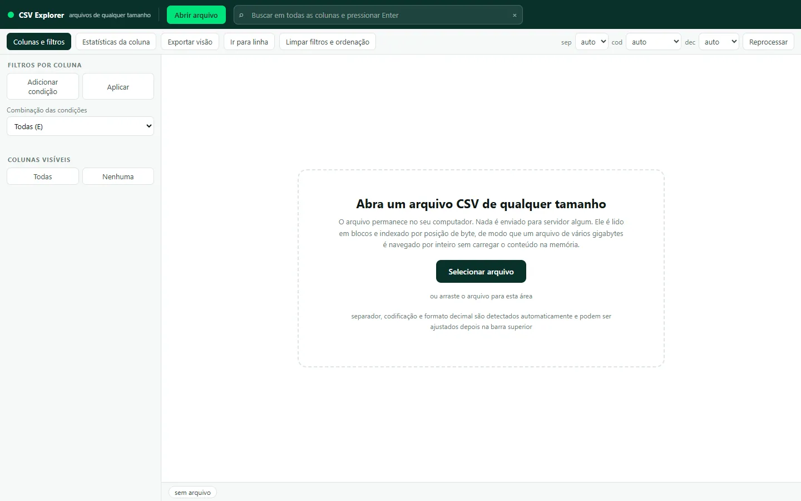
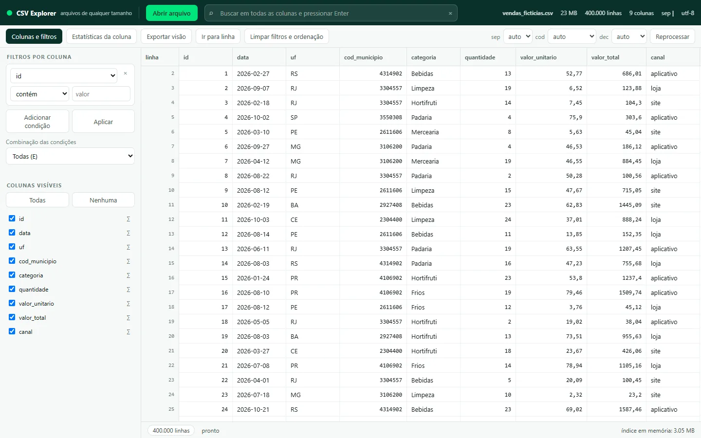
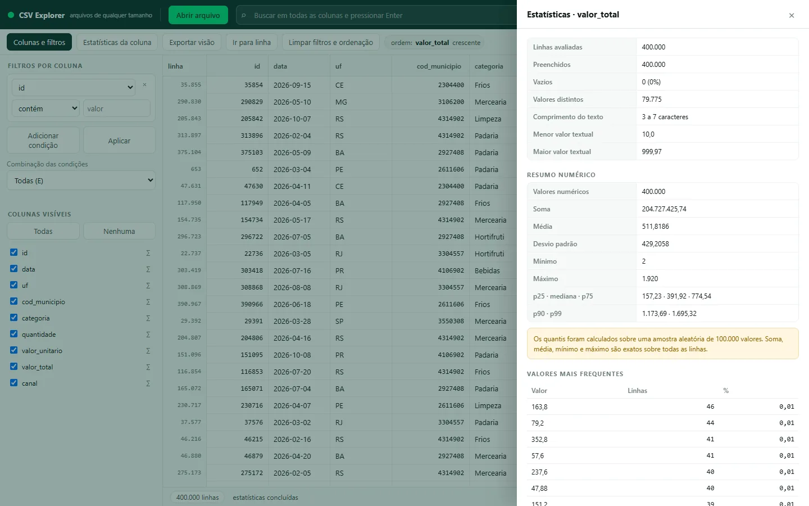
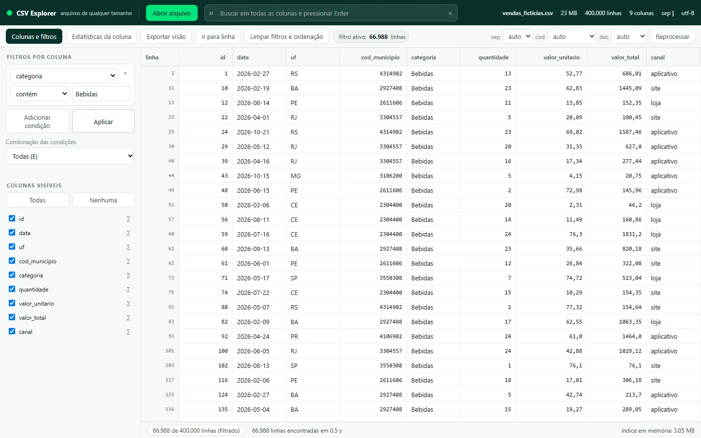

CSV Explorer
Ferramenta de página única para abrir arquivos CSV de vários gigabytes no navegador. O arquivo não sai do computador. A ferramenta lê em blocos e guarda só a posição de cada linha.
- Formato
- Página única, sem servidor
- Dados
- Ficam no computador do usuário
- Publicação
- GitHub Pages
- Ano
- 2026
400.000linhas no arquivo de teste (23 MB)
3,05 MBde índice em memória para essas linhas
0,5 spara filtrar 66.988 linhas
14operadores de filtro
Telas
Capturas da página publicada, com um arquivo de vendas fictício. Dados fictícios.








Como lê o arquivo
Fluxo de uso
Os ajustes detectados podem ser trocados na barra superior; o botão Reprocessar relê o arquivo.
Abrir
Selecionar ou arrastarCSV, TXT ou TSV
Detectar
Separador| ; , ou tabulação
CodificaçãoUTF-8, Windows-1252, ISO-8859-1
Decimalponto ou vírgula
Explorar
Buscaem todas as colunas
FiltrosE ou OU
Ordenarclique no cabeçalho
Estatísticaspor coluna
Ir para linhanúmero
Exportar
Visão atualfiltros, ordem e colunas visíveis
Funcionalidades
- Filtros14 operadores: contém, igual, começa com, vazio, maior que, entre, expressão regular e outros.
- EstatísticasMédia, soma, mínimo e máximo exatos; quantis sobre amostra de até 100.000 valores.
- ColunasMostrar ou esconder colunas e ajustar a largura arrastando a borda.
- RegistroPainel com todos os campos de uma linha.
- ExportaçãoQuantidade de linhas e separador à escolha; grava direto em disco quando o navegador permite.
- CancelarOperações longas podem ser interrompidas.
Tecnologias
HTMLCSSJavaScriptWeb WorkerFile System Access APIGitHub Pages